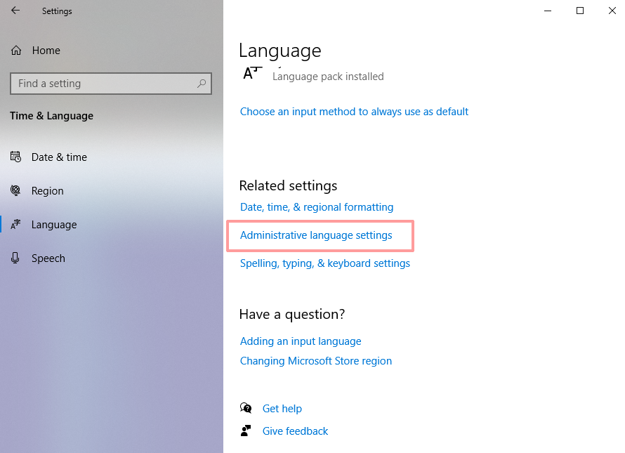
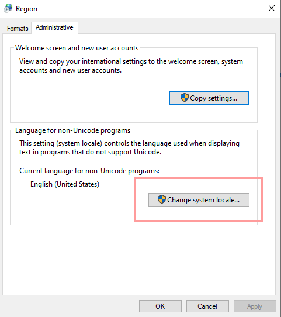

<!DOCTYPE html>
<html>
<head>
    <title>KDX Portal</title>

    <link href="https://fonts.googleapis.com/css?family=Open+Sans&display=swap" rel="stylesheet" />
    <link href="https://fonts.googleapis.com/css?family=IBM+Plex+Mono&display=swap" rel="stylesheet" />
    <link href="https://fonts.googleapis.com/css?family=Exo+2&display=swap" rel="stylesheet" />
    <link rel="stylesheet" type="text/css" href="resources/fonts/fontawesome/css/all.min.css" />

    <!--<link rel="stylesheet" type="text/css" href="node_modules/@aspectron/flow-ux/dist/latest/flow-ux-static/flow-ux/flow-ux.css" />
    <script type="module" src="node_modules/@aspectron/flow-ux/dist/latest/flow-ux-static/flow-ux/flow-ux.js"></script> -->

    <link rel="stylesheet" type="text/css" href="https://cdn.aspectron.com/latest/flow-ux-static/flow-ux/flow-ux.css" />
    <script type="module" src="https://cdn.aspectron.com/latest/flow-ux-static/flow-ux/flow-ux.js"></script>

    <link rel="stylesheet" href="resources/styles/kdx-portal.css">
    <link rel="stylesheet" href="resources/styles/theme-1.css">
    <link rel="stylesheet" href="resources/styles/style.css">
</head>
<body class="loading">
<script type="module">
import {BaseElement, html} from 'https://cdn.aspectron.com/latest/flow-ux-static/flow-ux/flow-ux.js';
//import {BaseElement, html, css} from './node_modules/@aspectron/flow-ux/dist/latest/flow-ux-static/flow-ux/flow-ux.js';

export class HomePage extends BaseElement{
    createRenderRoot(){
        return this;
    }

    render(){
        return html`
        <flow-app floating-drawer>
        
        <div slot="header">KDX</div>
        <div slot="header" class="flex"></div>
        <div slot="main">
            <section>
            <div class='intro'>
                <h2>KDX</h2>

                <p>KDX process manager provides zero-effort installation and configuration of the Kaspa 
                software stack when running in a desktop operating system environment.  KDX allows you to run Kaspa 
                full node software as well as Kasparov components that provide Kaspa BlockDAG API services.</p>

                <p>KDX is not a wallet (although it does include 
                    Kaspa's command-line wallet demo).</p><!-- ' -->
                <p>
                    Developers looking to integrate with Kaspa can leverage KDX to easily test integrations
                    with their development environments.  In production, developers are enouraged to setup their own deployment
                    of the Kaspa software stack by building software from sources or building docker images.
                </p>

                &nbsp;<br/>

                <div row>
                    <div flex></div>
                    <div></div>
                    <div flex></div>
                </div>
                &nbsp;<br/>
            </div>
            <div flex>&nbsp;</div>
            <div class='separator'></div>
            <div flex>&nbsp;</div>
            <div>
                <div><h2>Download KDX</h2></div>
                <!-- div red notice><i xclass="fal fa-exclamation-triangle fa-lg"></i>Please read Known Problems</div -->
                <div id="file-list">${this.renderFiles()}</div>

                <div style="text-align: left;">
                    <hr style="width: 30%; margin:24px 0px 14px 4px;"/>
                </div>
                
                <div>
                    <span class="file-link" href=""><div class="icon icon-docker"></div><div>
                        Docker images can be generated<br/> directly from KDX sources.
                    </div></span>
                    
                </div>
                
                
                <div><h2>Sources</h2></div>
                <div>
                    <a class="file-link" href=""><div class="icon icon-github"></div><div>http://github.com/kaspanet/kdx</div></a>
                </div>

                <div><h2>KDX Components</h2></div>
                <div>
                    <div style="margin-left:24px;">
                        KDX package includes the following components:
                    </div>
                    <ul class="components">
                        <li>Kaspad full node daemon</li>
                        <li>Kasparov API server</li>
                        <li>Kasparov blockDAG sync server</li>
                        <li>PostgreSQL (database)</li>
                        <li>Mosquitto (MQTT broker)</li>
                    </ul>
                    <div style="margin-left:24px;">
                        Please note that KDX is self-contained - 
                        these components will not be
                        installed on your computer.
                    </div>
                </div>

            </div>
        </section>
        <section column>
            <div>
                <h2>Developers</h2>
                <ul>
                    <li>KDX includes a miniature build toolchain that allows
                    you to rebuild Kaspa software stack directly from GitHub sources.</li>
                    <li>KDX includes and instance of KExplorer (Kaspa BlockDAG explorer) project configured against local instance of Kasparov API server.</li>
                </ul>

                <h2 red><i xclass="fal fa-exclamation-triangle fa-lg"></i> Mac OS - Known Problems</h2>
                <p>
                    <center>
                        Mac OS prevents unsigned applications from execution.  When running KDX first time,
                        you will be prompted with a warning, preventing you from running KDX:
                        <br/>
                        
                    </center>
                    <center>
                        Go to System Preferences, where you will see a note, allowing you to "Open Anyway"
                        <br/>
                        
                    </center>
                    <!-- center>
                        You will be prompted with a warning again:
                        <br/>
                        
                    </center -->
                    <center>
                        Alternatively:
                        <br/>
                        
                    </center>
                </p>
                <h2 red><i xclass="fal fa-exclamation-triangle fa-lg"></i> Windows - Known Problems</h2>
                <p>
                    Some OEM computers experience compatibility issue between PostgreSQL database module
                    and certain types of <u>international (non-US) Windows 10 installations</u>.  This problem especially
                    exists across DELL computers with manufacturer pre-installed Windows.
                </p>
                <p>
                    <strong red>Symptoms:</strong> Postgres fails to start, giving errors related to Locale settings such as:
                   &nbsp; <span monospace>WARNING: 01000: could not determine encoding for locale "English_Israel.utf8": codeset is "CPutf8"</span>
                    
                </p>
                <p>
                    Microsoft have introduced an experimental beta option for computer locale settings
                    that causes a variety of application compatibility issues and on some OEM OS installations
                    this option is turned on by default, which it should not be.
                </p>
                <p>
                    If you are experiencing this, you need to apply the following workaround:</span>
                </p>
                <br/>
                <p>
                    <center>
                        <h4>Open Control Panel and search for "Languages"</h4>
                        
                    </center>
            
                    <center>
                        <h4>In the Languages panel select "Administrative Language Settings"</h4>
                        
                    </center>
            
                    <center>
                        <h4>Select "Change system locale..."</h4>
                        
                    </center>
            
                    <center>
                        <h4>Make sure that "Beta: Use Unicode UTF-8" checkbox if OFF</h4>
                        
                    </center>
                    <center><h4>Reboot your computer.</h4></center>
                    <hr width="50%"/>
                </p>
            </div>
        </section>
        </div>
        </flow-app>
        `;
    }

    renderFiles(){
        return Object.entries({
            'kdx-v1.0.0-windows-x64.exe' : 'installer',
            'kdx-v1.0.0-windows-x64.zip' : 'portable',
            'kdx-v1.0.3-darwin-x64.dmg' : 'DMG image',
            '-kdx-1.0.3-darwin-x64.zip' : 'portable',
            '-kdx-1.0.0-linux-x64.zip' : 'portable'
        }).map(([file, descr]) => {
            let disable = '';
            if(file.charAt(0) == '-') {
                file = file.substring(1);
                disable = 'disable';
            }

            let [app,version,os,platform] = file.split('-');
            return html`
            <flow-download-badge class="dl-wrapper ${disable}"
                file="downloads/${file}"
                icon="resources/images/${os}.svg"
                title="${file}"
                descr="${descr}"
                sha1="downloads/${file}.sha1sum"
                ></flow-download-badge>
            `;
        });
    }
}

HomePage.define("home-page");

</script>

<home-page></home-page>
</body>
</html>

